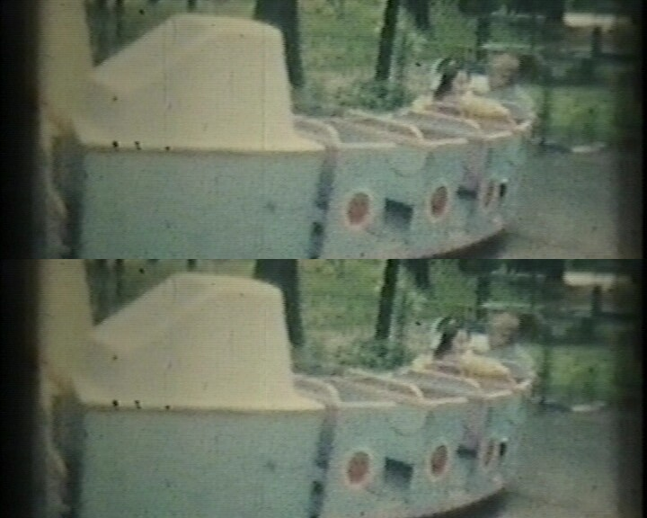

Plugin for AviSynth 2.5
Version 1.1
Copyright (C)2003-2016 Alexander G. Balakhnin aka Fizick
http://avisynth.org.ru
The plugin firstly detects scratches, then removes them.
It uses spatial information only from current frame.
I adapt it to restoration of my old 8 mm films, may be it will be useful to somebody else.
Apply some vertical blur to frame copy, for suppression of image thin structure, inclined lines and noise.
Search for local extremes of luma in every row with luma difference criterion for scratches with width not above a max.
Put these extremes in some map (frame). Search and deactivate extrems for width below a min (optional).
Optionally close vertical gaps in extrems by vertical expanding of extreme points.
Test the extremes map with length and angle criterions, so select real long scratches only.
Scratches may be either partially transparent, smooth (with image details), or opaque (with no details or almost destroyed).
In the first case, plugin can subtract smooth (blurred) part of luma scratches variation from original image. Therefore, image details are kept.
In the second case, plugin replaces scratched pixels by mean luma values from some neighbours pixels (in same row).
We have also intermediate case by setting some percent of detail to keep.
In all cases, some nearest neighbours pixels may be also partially changed for smooth transition.
The program is plugin (filter) for free Avisynth 2.5.
Tested with versions 2.55beta to 2.5.8. Should work for Avisynth 2.6.0 too.
Compiled with MS VC++ Toolkit 2003.
DeScratch(int mindif, int asym, int maxgap, int maxwidth, int minlen, int maxlen, int maxangle, int blurlen, int keep, int border,
int modeY, int modeU, int modeV, int mindifUV, bool mark, int minwidth, int left, int right)
All parameters are named and optional.
mindif - minimal difference of pixel value in scratch from neighbours pixels for luma plane
(from 1 to 255, default 5):
asym - maximal asymmetry of neighbors pixels (from 0 to 255, default 10)
maxgap - maximal vertical gap to be closed (from 0 to 255, default 3)
maxwidth - maximal scratch width (odd from 1 to 15, default=3)
minlen - minimal scratch length (default = 100)
maxlen - maximal scratch length (default = 2048)
maxangle - maximal angle to vertical (in degrees, default = 5)
blurlen - radius of vertical blur for frame analysis (default = 15)
keep - percent of scratch detail to keep (default = 100)
border - thickness of border near scratch for partial restoration
(default = 2)
modeY - processing mode for luma plane (0 - no, 1 - low(black), 2 - high(white), 3 - both, default=1)
modeU - processing mode for chroma U plane (0 - no, 1 - low(green), 2 - high(red), 3 - both, default=0)
modeV - processing mode for chroma V plane (0 - no, 1 - low(yellow), 2 - high(blue), 3 - both, default=0)
mindifUV - minimal difference of pixel value in scratch from neighbours pixels for chroma planes
(from 0 to 255, default 0):
if = 0, then internal mindifUV value is same as mindif.
mark - mark scratch in debug mode (true or false, default = false)
(set rejected extrems pixels to grey, set scratches pixels to white or black)
minwidth - minimal scratch width (odd from 1 to 15, default=1)
left - left margin of processing window (inclusive), default=0
right - right margin of processing window (exclusive), default=frame width or 4096
maxgap, maxwidth, minwidth, minlen, blurlen, border, left, right should be given in pixels.
You MUST tune parameters for your video.
Use AviSynth commands Greyscale(), UtoY(), VtoY(), and mark parameter for debug and tuning.
Old scratched 8 mm film. Top half frame - before filter, bottom half frame - after filter

AviSource("input.avi")
LoadPlugin("descratch.dll")
ConvertToYV12()
DeScratch(mindif=2)
Such long thin noisy lines sometimes appears in analog capture material (TV or VHS line drop-out, etc). This problem was discussed at Doom9, see article Removal of clicks and scratches (July 10-31, 2004). But in the article DeSpot plugin was used, what is not most appropriate tool for this, due to very weak noise level. DeScratch could be more effective, however is not ideal too (old versions can process luma plane only). Of course, you must rotate clip for processing with Descratch (and do not forget rotate it in reverse direction after cleaning :-).
See results for some VHS source (from Ivo).
Top half frame - before processing , bottom half frame - after processing:
LoadPlugin("descratch.dll")
AviSource("drop-outs_.avi")
ConvertToYV12()
Crop(0,0,-0,288) # select top part of frame to save screen space
input=last
AssumeTFF()
SeparateFields() # for analog interlaced source
TurnLeft()
DeScratch(mindif=4, maxgap=20, minlen=300, blurlen=50, keep=100, border=0, maxangle=0)
TurnRight()
Weave() # restore fields
# Compare source frame and frame after scratch removing
StackVertical(input, last)
Optimal Descratch parameters used - big minlen, null maxangle.
For color line dropouts removing, you can use modeU, modeV and mindifUV parameters.
See doom9 Avisynth forum, special thread http://forum.doom9.org/showthread.php?s=&threadid=67794
This program is FREE software, under GNU GPL licence v2.
Please donate for support.
The plugin works only in YV12.